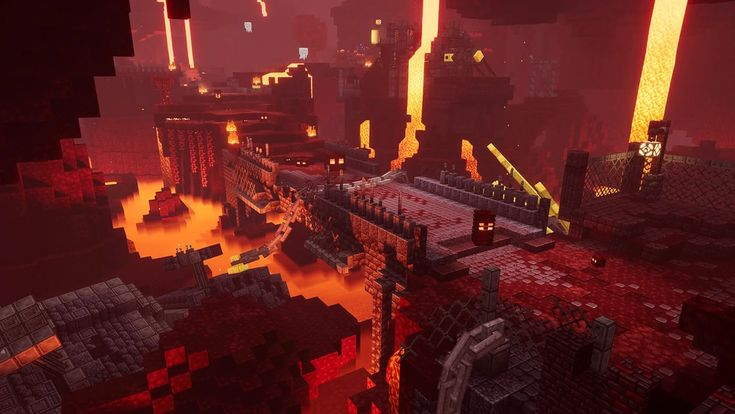
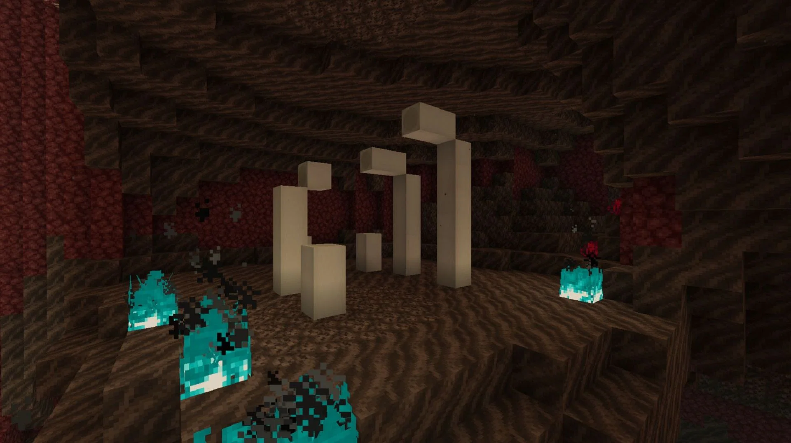

NETHER
O Nether é uma dimensão alternativa no Minecraft, conhecida por
seu ambiente hostil e infernal. É acessível através de portais
construídos com obsidiana e ativados com um isqueiro. Uma vez
dentro do Nether, os jogadores se deparam com um mundo
completamente diferente do Overworld, cheio de perigos e recursos únicos.
O Nether é um lugar desafiador, mas cheio de recompensas para
aqueles que se aventuram e dominam seus perigos. Suas
riquezas e recursos são essenciais para a progressão no
Minecraft, tornando-o uma dimensão crucial para qualquer jogador
que busca completar o jogo.
ESTRUTURAS
FORTALEZA
A Fortaleza do Nether é uma das estruturas
mais importantes e desafiadoras do Minecraft,
localizada na dimensão do Nether. Estas fortalezas
são construções enormes, feitas de tijolos do Nether,
que emergem das profundezas infernais e se
estendem por longas distâncias. Elas são cruciais
para o progresso no jogo devido aos recursos e
mobs específicos que podem ser encontrados nelas.
Aqui está uma descrição detalhada sobre a Fortaleza do Nether:
BASTIÃO
Os Bastions Remnants são uma adição fascinante e desafiadora
ao Nether. Com sua arquitetura complexa, mobs perigosos e
tesouros valiosos, eles oferecem uma experiência única e
emocionante para os jogadores que se atrevem a explorá-los.
Enfrentar os perigos dos Bastions e conquistar suas recompensas
é um verdadeiro teste de habilidade e coragem no mundo do Minecraft.
FÓSSEIS
Os fósseis no Nether são estruturas
raras e intrigantes que podem ser encontradas
no bioma Vale das Almas. Esses fósseis
são formados por blocos
de osso, e suas aparições adicionam
um elemento misterioso e pré-histórico
ao ambiente infernal do Nether.